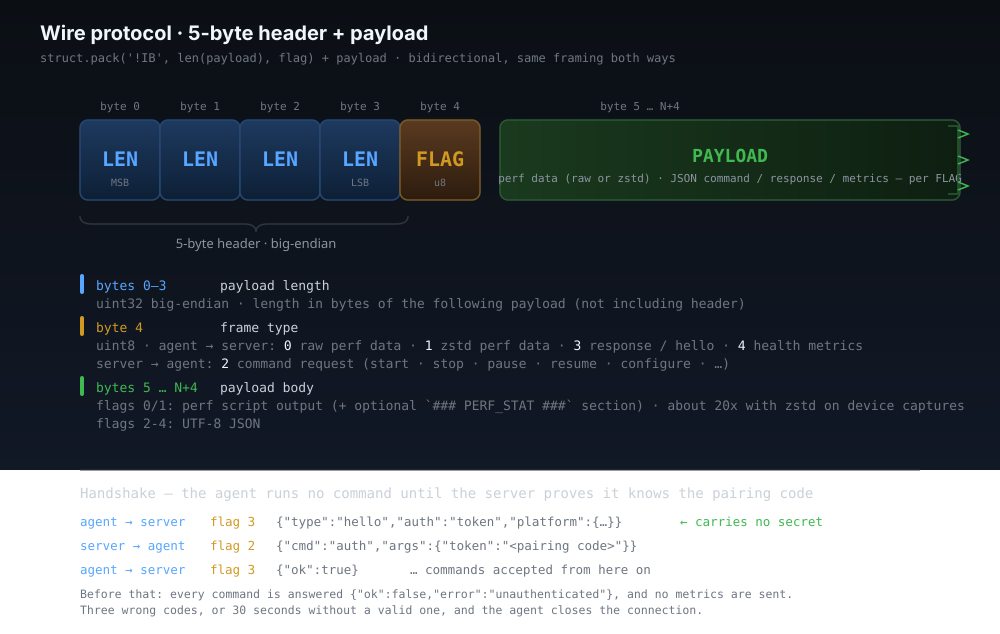

Architecture
One sentence: perf record → agent → TCP + zstd
→ server → parser → source mapper → SSE → browser.

On the target device
The agent is the only thing running on the target: a
single static C binary with vendored zstd and zero
runtime dependencies. Prebuilt binaries ship for five architectures,
install with one curl command, and self-update with
--update.
Capability probing
Before collecting anything, the agent inspects the kernel:
- Reads
/proc/sys/kernel/perf_event_paranoidand warns if > 1. - Enumerates candidate events (
cycles,instructions,cache-misses,cache-references,branch-misses,branch-instructions,page-faults,context-switches,cpu-migrations) and keeps only the onesperf record/perf statactually accepts. - Tries call-graph modes in order:
fp→dwarf→lbr, picks the first that produces non-empty stacks. - Probes whether
perf script -Fis supported (perf ≥ ~3.12) and falls back to the default output format on older kernels.
This costs roughly 6–12 seconds on first connection and is a one-time hit.
Collection rounds
Each round runs perf record and perf stat in parallel for
N seconds (default 8), then perf script flattens the trace.
The result — perf script text optionally followed by a
### PERF_STAT ### section — is compressed with
in-process zstd (level 1, vendored in the agent) and pushed over TCP
with a 5-byte header. Typical compression: 20–40×.
Health metrics
Independent of the perf pipeline, the agent collects device health every
2 seconds — CPU per-core, memory, load, temperature, process
stats, network bytes — and streams them as JSON frames with
flag 4. Disk I/O (per-device + per-process) and
per-thread CPU collectors are opt-in — off by default so embedded
targets pay nothing, enabled at runtime from the UI via the
configure_metrics command. The browser renders sparklines,
gauges, and per-core CPU bars without affecting the perf collection,
and dragging across a sparkline scopes the flame graph to that time
window.
On the local machine
One Python process (perflens serve) owns everything on
the local side. web.py runs a FastAPI/uvicorn HTTP layer
for the UI and JSON API; server.py owns the agent side
on plain threads — the TCP listener, the recv loops, and the
aggregation rebuild worker. One agent at a time, any number of SSE
browser clients.
Parser
parser.py parses perf script output, and
aggregator.py folds each new chunk incrementally —
O(new samples) per chunk, not O(total) — into:
- Per-event sample lists — one bucket per event type.
- Function summaries with self %, total %, sample counts, module column.
- Flame graph trees — collapsed call stacks aggregated into a value-weighted tree.
- Thread index with per-tid sample counts and top functions, extracted from the
pid/tidandcommfields.
The parser is defensive on purpose. The perf script format
drifts across kernel versions; the optional [cpu],
pid/tid, and flags fields appear in different combinations on
2.6, 3.x, 4.x, 5.x, and 6.x. The parser handles all of them and silently
tolerates lines it doesn't recognize.
Source mapper
source_mapper.py pipelines sample addresses through
addr2line -f (or -fi when --inline is
on) in batches of 500. A single mapper is created at server startup and
shared across requests — no per-request forking. Resolutions and
source-file indexes persist under ~/.perflens/cache
(symcache.py), so warm restarts skip the work.
Lookups feed a heat map: each source line gets a sample count, and the UI
colors it red → amber → green by share of the file's total. With
--toolchain-prefix, the same flag derives the right
addr2line and readelf for a cross-compiled target
in one step. --sysroot resolves shared-library module paths
and source files under a target tree, similar to perf --symfs.
Sessions
Every agent connection becomes a session. Raw chunks are written to
disk under ~/.perflens/sessions/<id>/ as the
agent streams them; metadata (events, sample totals, perf stat values,
platform) is written when the connection closes.
Replay is lazy: the UI hits /api/sessions/<id> only when
you click a session, and the server re-parses the raw chunks on demand.
A standalone perf.data file can also be imported —
with --import at startup or uploaded through
/api/import — the server runs perf script
against it once and exposes the result as a session.
Wire protocol
Every message is a 5-byte header followed by a payload of exactly
LEN bytes.

header = struct.pack('!IB', len(payload), flag)
sock.sendall(header + payload)| Field | Size | Meaning |
|---|---|---|
LEN | 4 bytes (uint32, big-endian) | Payload length in bytes |
FLAG | 1 byte (uint8) | See flag table below |
PAYLOAD | LEN bytes | Frame body (perf data, JSON, etc.) |
Flag values
| Flag | Direction | Payload |
|---|---|---|
0 | agent → server | Raw UTF-8 perf script output |
1 | agent → server | Zstd-compressed perf script output |
2 | server → agent | Command request (JSON): start, stop, pause, resume, configure, list_processes, reprobe, … |
3 | agent → server | Command response (JSON) |
4 | agent → server | Health metrics (JSON, default every 2 s; interval + opt-in collectors set via configure_metrics) |
Payloads with flag 1 are decompressed in-process via the
zstandard package (external zstd binary as a
fallback). Perf data payloads carry plain perf script text,
optionally followed by a ### PERF_STAT ### section the
parser splits out.
Two connection modes
The agent can be the connector or the listener — the wire protocol is the same either way.
--server <host>— daemon mode: agent dials the server. Reconnects with exponential backoff if dropped. Useful on devices that sit behind NAT or restart often.--listen— daemon mode: agent binds a port and waits. The server reaches out via the UI's Live Debug wizard. Useful when you want to discover targets from the UI.--output FILE— headless: collect once, write to file (-for stdout). Requires--pid.
Broadcast to the browser
The server pushes updates to the UI through a Server-Sent Events
stream at /api/stream: status,
agent_connected, event_types,
data_version (bumped per chunk), perf_stat,
and metrics_<type>. When data_version
bumps, the browser fetches the cached gzip snapshot from
/api/per-event and rerenders. There is no polling.
Per-thread analysis, source views, and exports are pull-based: the UI hits
/api/thread-view, /api/source, or the
/api/export/… endpoints on demand — see the
Reference for the full list.
Known limits
- One agent connection at a time. A new agent replaces the current one.
perf_event_paranoid > 1may restrict which events the kernel allows. The agent warns at startup.- Some container environments strip the perf capability set, so
perf record -p <pid>returns empty. A system-wideperf record -ausually works as a fallback. - Source mapping requires a binary compiled with
-gand not stripped. - The source view renders up to ~2000 lines (or hottest line ± 100, whichever is larger).